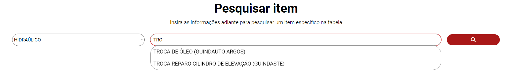
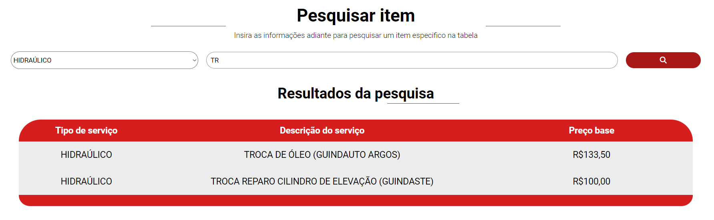

Opções de ajuda
Abaixo selecione a opção na qual você deseja ajuda

O
Abaixo selecione a opção na qual você deseja ajuda
Quando este botão é clicado o usuário é levado a uma
É recomendado o uso desta funcionalidade no momento de preencher os valores de um serviço em um orçamento, para que haja sempre conformidade entre os orçamentos e os valores descritos na tabela.
Como primeiro parametro de pesquisa, é necessário escolher o tipo de serviço o qual o item inclui, caso esse parametro não seja colocado o programa irá pesquisar entre todos os serviços da tabela. É importante lembrar que esta pesquisa é indicada para achar um item especifico, sendo assim quanto mais especificação melhores serão os resultados como mostrado na imagem abaixo.

Depois de selecionado o tipo de serviço é necessário descrever o serviço desejado como a imagem acima mostra. Este sistema possui uma ferramenta de sugestões onde conforme o usuário digita , e de acordo com o tipo de serviço selecionado, esta ferramenta vai criando sugestões com base nos serviços existentes visando assim facilitar o modo de pesquisa.
Após feita a descrição do serviço que se deseja pesquisar basta clicar no botão de pesquisa que o sistema irá gerar uma tabela de acordo com os parametros de pesquisa passados : tipo de serviço e descrição do serviço, como mostra a imagem abaixo.Importante apontar que o sistema não fará a pesquisa se a descrição do serviço estiver vazia ! Caso o sistema não encontre o que foi digitado a lista informará ao usuário que não existem serviços correspondentes.
